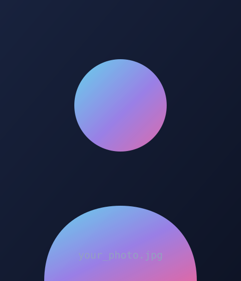
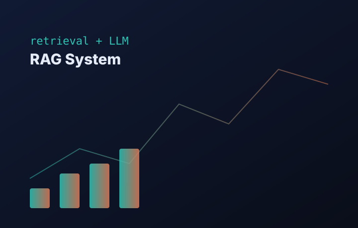
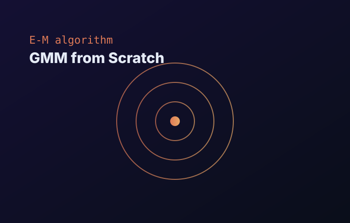
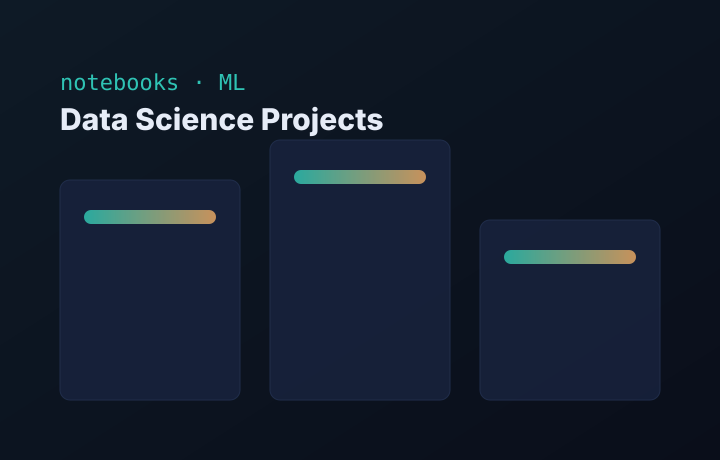

🤖
LLMs & Generative AI
Building RAG pipelines and LLM-powered apps — retrieval, prompting, evaluation and grounding answers in real data.
Gowshigan Selladurai — AI Engineer & Data Scientist · Paris
Apprentice at Cleva, finishing an MSc in Distributed Systems & Data Science. I work on LLM / RAG systems, machine-learning models — sometimes from scratch — and the pipelines that carry them to production.
Hello! I'm Gowshigan, an AI Engineer & Data Scientist based in Paris, France. I'm currently an apprentice at Cleva while finishing my Master's degree, and I love turning messy, real-world data into reliable AI systems.
I'm pursuing an MSc in Distributed Systems & Data Science (SDTS) at UPEC. Lately I've been focused on LLMs, retrieval-augmented generation (RAG) and shipping ML from notebook to production. I also enjoy hackathons — recently winning 1st place at the Data For Good Hackathon 2026.
Here are a few technologies I work with day to day:

Building RAG pipelines and LLM-powered apps — retrieval, prompting, evaluation and grounding answers in real data.
Modeling, feature engineering and evaluation — from classical ML implemented from scratch to deep learning.
Packaging and serving models and demos so they run reliably outside the notebook.

Featured project
A retrieval-augmented generation system that grounds LLM answers in your own documents — embedding, retrieval and generation wired into a simple, hackable pipeline.

Featured project
An educational deep-dive implementing Gaussian Mixture Models and the Expectation-Maximization algorithm from first principles — the only guide you need to truly understand GMM.

Featured project
A growing collection of data-science work — exploratory analysis, modeling and end-to-end notebooks exploring real datasets and ML techniques.
Building AI and data-science solutions as an apprentice — working on LLM-powered features, ML models and data pipelines.
Won first place building an AI solution for social impact under hackathon time constraints.
Selected as a finalist at the Pioneers AI Lab hosted at Station F, and competed in the AMD Robotics Hackathon.
Master's degree (SDTS) covering distributed systems, machine learning and data science.
05. What's next?
I'm always open to interesting AI & data projects, collaborations and opportunities. Whether you have a question or just want to say hi, my inbox is always open.
Say hello